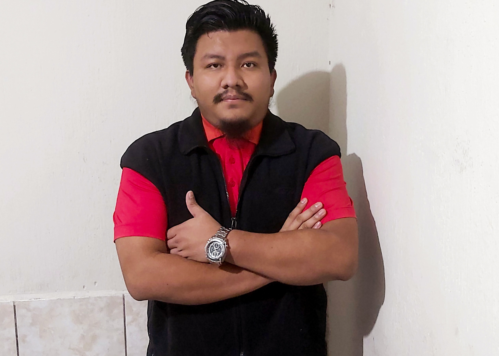

Gerson Vasquez

Summary
I'm a junior software developer. I've been learning & coding for two years. I’m passionate about software development and I’m looking forward to getting to work on new projects in the near future.
I am currently employed as an Operations Team Leader at Telus International Guatemala. I provide team members leadership, coaching, and support and develop plans to achieve the targets of the operation.
Education
- Software Developer Bootcamp - CoreCode (2022)
- Scrum Essentials - Scrum Network (2022)
- Scrum Fundamentals Certified - SCRUMStudy (2022)
- Perito Contador -Escuela de Ciencias Comerciales America (2012)
Work Experience
Operations Team Leader - Telus International Guatemala
June 2019 - Current
Responsabilities:
- Prioritize and manage multiple tasks, including potential competitive and conflicting priorities
and time pressures
- Time management and prioritization skills
- Advanced analytical skills to provide direction on performance analysis
- Oversee day-to-day teams' operation and performance
Customer Service Representative - ICS Guatemala
June 2018 - June 2019
Responsabilities:
- Answer customer questions and provide technical support
- Provide customer service and answer questions
- Build rapport with customers by engaging with them in an inviting, friendly, and professional manner, to deliver exceptional experiences nurture lasting relationships
Skills
- Customer service
- Time management
- Teamwork
- React.js
- Node.js
Other